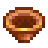
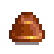
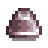
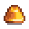
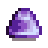

Pans
The Pan is a tool used to gather ore (and other items) from bodies of water. A Copper Pan is received from Willy after the Glittering Boulder at the bridge just west of the mine entrance is removed, revealing a stream in its place. This is accomplished by completing the Fish Tank Bundles or purchasing "Panning" from the Joja Community Development Form for  20,000g.
20,000g.
Acquisition
Go to the mountain area any day after the Glittering Boulder is removed. A cutscene will trigger where Willy is wondering about the disappearance of the boulder. He points out the shimmering lights in the water that indicate that the stream is carrying ore and minerals out of the Mountains. He then gives the player his extra Copper Pan from his backpack.
Thereafter, Copper Pans can be purchased from the Fish Shop for  2,500g.
2,500g.
Use
Watch for the shimmering lights that randomly appear in water, accompanied by the sound of something "falling" in the water. If the area can be reached, approach it, equip the Pan, and left-click on the shimmering lights. Using the Pan consumes no energy. The location(s) of the shimmering lights and the item(s) received from panning are predetermined at the beginning of the day in a region. Shimmering lights can appear in any lake, pond, or river, on the Beach during the Night Market, and on Ginger Island.
It can also be placed on the player's head as a hat by moving it from inventory into the player's head equipment slot, while still functional as a tool when placed back in inventory. This is useful for saving inventory space.
Each ore obtained from panning gives 1 point of mining experience (XP).
Grades of Pan
| Image | Name | Cost | Ingredients | Improvements |
|---|---|---|---|---|
 |
Copper Pan | N/A | Can find 3 to 9 ores and up to 1 special item from panning. | |
| Steel Pan | Can find 4 to 10 ores and up to 2 special items from panning. Has a small chance to spawn another panning spot. | |||
| Gold Pan | Can find 5 to 11 ores and up to 3 special items from panning. Slightly higher chance to spawn another panning spot. | |||
| Iridium Pan | Can find 6 to 12 ores and up to 4 special items from panning. Has a high chance to spawn another panning spot. |
Items Obtained
A random number of one type of metal ore is always received from panning. This ranges from 3 to 9 for the Copper Pan up to 6 to 12 for the Iridium Pan. Luck buffs and daily luck can also very slightly increase the amount received (5 levels of Luck buff guarantees 1 extra ore, perfect daily luck increases amount of ore by 0.2 on average).[1]
The type of ore is random and depends on the Pan level, Luck buffs, and daily luck. The base chances are:
 Iridium Ore (1%)
Iridium Ore (1%) Gold Ore (20.8%)
Gold Ore (20.8%) Iron Ore (32.3%)
Iron Ore (32.3%) Copper Ore (36%)
Copper Ore (36%) Bone Fragment (10%, increased to 20% with Archaeologist, reducing other types except Iridium)
Bone Fragment (10%, increased to 20% with Archaeologist, reducing other types except Iridium)
Pan level increases the chance to find iridium by 5% per level, daily luck by ±10%, and Luck buffs by 0.1% per level. The chance to find copper is reduced respectively.
In addition, various special items can be received. The number of rolls for these items is random, and is affected by the type of pan used, Luck level, and daily luck. The type of Pan sets a hard cap on the maximum number of rolls, with the Copper Pan being limited to 1 roll and Iridium Pan having up to 4 rolls. The Generous enchantment increases this cap by 2.
There is a base 40% chance for the roll to succeed, which is changed ±10% by daily luck, increased by 4% per level of Luck buff, and increased by 4% per Pan level (e.g. by 12% for the Iridium Pan). If the Pan is enchanted (no matter what enchantment), this becomes 5% per level, e.g. 15% for the Iridium Pan. Once this roll fails, more items are not given.
For example, for an Iridium Pan enchanted with Generous, there is a 55% base chance for the roll to succeed (modified by luck). If it succeeds, another item is rolled, and so on until there have been 6 rolls or one roll fails. This means that, on average, 1.18 special items are received for each panning. With +2 Luck and perfect daily luck, this increases to 73%, averaging 2.29 special items.
Exactly one item from the following is chosen each roll:
 Diamond (1.5%, ±7.5% with daily luck, +0.37% for each Pan upgrade)
Diamond (1.5%, ±7.5% with daily luck, +0.37% for each Pan upgrade) Amethyst (1%)
Amethyst (1%) Aquamarine (1%)
Aquamarine (1%) Emerald (1%)
Emerald (1%) Ruby (1%)
Ruby (1%) Topaz (1%)
Topaz (1%) Omni Geode (28%, gives 1-3)
Omni Geode (28%, gives 1-3) Fire Quartz (4.7%)
Fire Quartz (4.7%) Earth Crystal (4.7%)
Earth Crystal (4.7%) Frozen Tear (4.7%)
Frozen Tear (4.7%) Coal (50%, gives 1-7, decreased by daily luck and Pan upgrades)
Coal (50%, gives 1-7, decreased by daily luck and Pan upgrades)
The decreases to Coal probability mirror the increases to Diamond probability. Also, Luck level very slightly increases Diamond chance and decreases the chance for the other gemstones.
In addition to the one item from above, the following may be added in each roll:
- Random piece of Furniture or Clothing (0.5%, up to 5% based on daily luck)
- Random location-appropriate Fish that can be caught at that particular time, weather, and season (10%, only if the pan has the Fisher enchantment)
- Random Artifact (2%, or 7% with the Archaeologist enchantment)
 Mystery Box or
Mystery Box or  Golden Mystery Box (3.3%, or 4.4% with the Book of Mysteries)
Golden Mystery Box (3.3%, or 4.4% with the Book of Mysteries) Lucky Ring (0% with neutral daily luck, up to 3.3% with perfect daily luck, +0.06% per Luck level)
Lucky Ring (0% with neutral daily luck, up to 3.3% with perfect daily luck, +0.06% per Luck level)
In addition to the special items, a few more items are rolled separately. There is a 5% chance to get an Artifact Trove, which is increased to 20% with the Archaeologist enchantment. This roll is repeated until it fails, giving 0.05 troves on average, or 0.25 with Archaeologist.
On Ginger Island, two extra items can be received: the Fossilized Tail with a 20% chance (only in the Dig Site river) or Taro Tubers with a 20% chance (everywhere else).
Hats
Pans can also be placed on the player's head as a hat by moving it from inventory into the player's head equipment slot.
| Image | Name | Description |
|---|---|---|
 |
Copper Pan (hat) | You place the copper pan on your head... |
 |
Steel Pan (hat) | You place the steel pan on your head... |
 |
Gold Pan (hat) | You place the gold pan on your head... |
 |
Iridium Pan (hat) | You place the iridium pan on your head... |
Notes
- The Tracker profession can facilitate panning by adding a small green arrow when shimmering lights appear off-screen (but only within the current map region).
- While the four types of pans can be placed on the player's head they cannot be placed on a mannequin or cursed mannequin, unless the player places the pan on their head and swaps clothes with the mannequin or cursed mannequin.
References
- ↑ See Pan::getPanItems in the game code.
History
- 1.0: Introduced.
- 1.4: Can now be trashed. Can be bought at Willy's Fish Shop after receiving the first one. Can now be used as a hat.
- 1.5: Can find Fossilized Tail and Taro Tubers on Ginger Island. Can now find the Lucky Ring by panning.
- 1.6: Can now be upgraded to steel, gold, and iridium version at the Blacksmith. Pans can be enchanted. Can now find Bone Fragments, Mystery Boxes, Artifacts, clothing and furniture. Shimmering lights no longer appear every half hour at the Ginger Island Dig Site. Pan no longer yields the same thing if the player pans in the same spot twice in the same day.
| Tools | |
|---|---|
| Basic | Axes • Golden Scythe • Iridium Scythe • Hoes • Pans • Pickaxes • Scythe • Trash Cans • Watering Cans |
| Fishing | Training Rod • Bamboo Pole • Fiberglass Rod • Iridium Rod • Advanced Iridium Rod • Crab Pot |
| Other | Auto-Grabber • Auto-Petter • Hay Hopper • Heater • Incubator • Milk Pail • Ostrich Incubator • Shears |